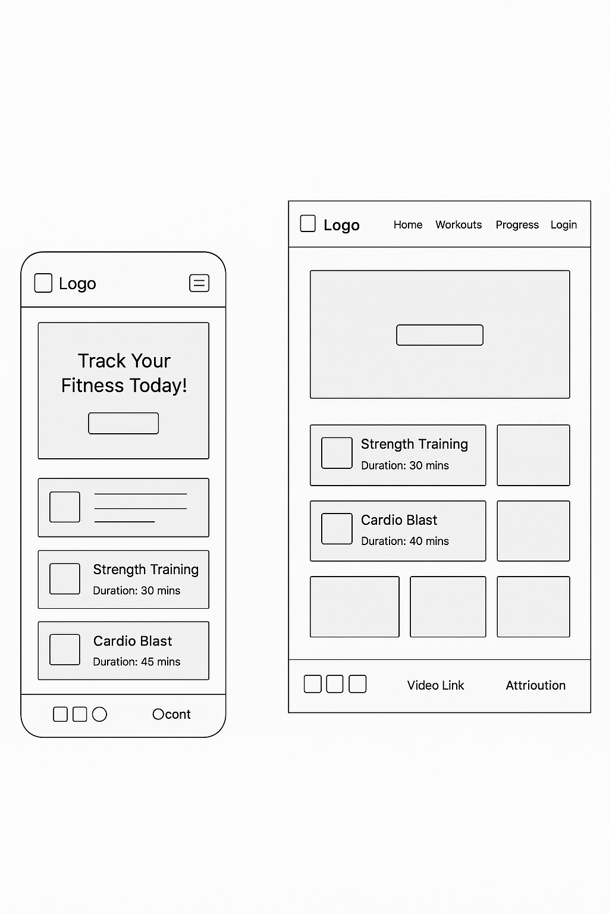

This name reflects the core purpose of the site: tracking fitness workouts and progress, syncing with the user's pulse on their fitness journey. The name is catchy, modern, and easy to remember.
Site Purpose
FitPulse is designed to provide users with workout plans and exercise information while enabling them to track their workout progress dynamically. Users can browse different workout routines, view detailed exercise instructions, and log their completed workouts.
Scenarios
Which workout plan is best suited for beginners looking to build muscle?
How can I log my daily workouts and track progress over time?
Color Schema
The site will use a clean, motivating color scheme focused on energizing blues and calming neutrals.
Primary Blue: #0077b6 — Used for headers, buttons, and accents.
Soft Gray: #f0f4f8 — Background color for page and sections.
Dark Slate: #023047 — Used for body text and footer.
Typography
“Montserrat” — Headings and buttons (modern, strong sans-serif)
“Open Sans” — Body text and paragraphs (clean, readable sans-serif)
“Roboto Mono” — Special code blocks or workout stats (monospace for clarity)
Wireframe
Home Page (Desktop):
Header with logo and navigation links (Home, Workouts, Progress)
Hero section with motivating image and call to action
Footer with social links, attribution, and video link
Home Page (Mobile):
Hamburger menu for navigation
Stacked workout cards with touch-friendly spacing
Workout Details Modal:
Exercise list with instructions and images
Button to log workout progress

Figure: Desktop layout wireframe of the FitPulse home page
CSS Plan
Use external CSS file with:
Responsive grid/flexbox for workout cards
Hamburger menu for small screen navigation
Color variables for theme consistency
Accessible focus states and hover styles
JavaScript Features
Data Fetching: Load workout plans and exercise data from a local JSON file asynchronously using Fetch API with try...catch error handling.
Dynamic Content Generation: Generate and display 15+ workout cards dynamically with details such as name, type, duration, and difficulty.
Local Storage: Save user's logged workouts and preferences locally so progress persists across sessions.
Modal Dialogs: Use accessible modals for workout detail views and workout logging forms.
DOM Manipulation & Event Handling: Add event listeners for opening modals, submitting forms, and filtering workouts.
Array Methods: Use array methods like filter and map to filter workout types and render cards.
Template Literals: Construct dynamic HTML content for workout cards and modal content.
ES Modules: Organize JavaScript into modules: data fetching, UI rendering, local storage handling, event listeners.
Accessibility & SEO
Semantic HTML5 tags (header, nav, main, footer)
Keyboard navigable modals and form elements
Alt text for all images
Meta tags for SEO (title, description, author)
Open Graph tags for social sharing
Form
Include a workout log form that collects date, workout type, duration, and notes. Form submission data is displayed on a separate form action page (not counted in page total) and saved to local storage.
Testing and Validation
Validate HTML and CSS for standards compliance
Test responsiveness on various screen sizes
Check color contrast for accessibility
Test keyboard navigation and screen reader compatibility
Performance checks to keep page size under 500kB
Professionalism and Attributions
Proofread all content for grammar and spelling.
Include an Attributions link in footer to cite any external data sources or images used.